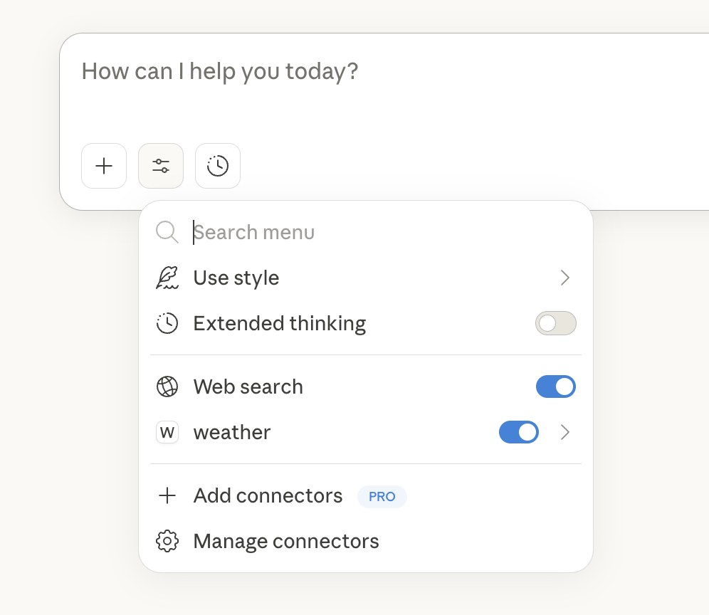
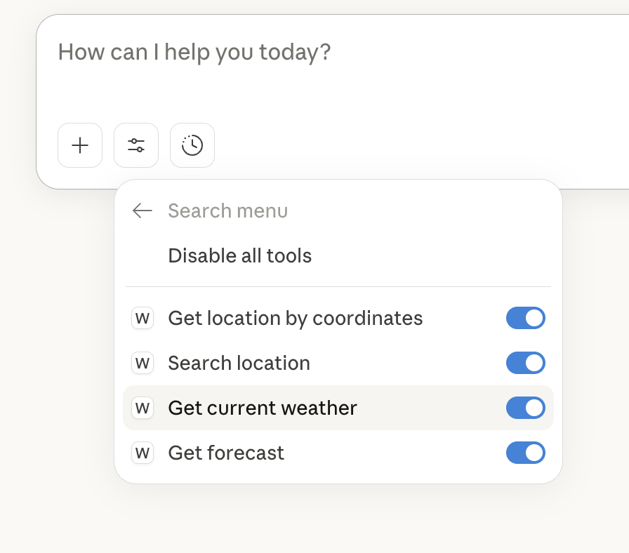
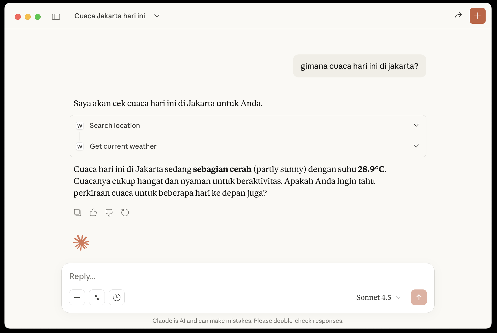

Build Your Own MCP Server

About Me

x.com/algonacci
github.com/algonacci
linkedin.com/eric-julianto
instagram.com/eric.juliantooo
Work Experience
Research Analyst at Braincore (Dec 21 - Now)
Machine Learning Mentor at Bangkit Academy (Feb 23 - Jan 24)
SEO Intern at Dibilabs by Dibimbing.id (Mar 23 - Jun 23)
AI Developer Intern at ZettaByte (May 22 - Aug 22)
Education
- Hospitality & Tourism at Universitas Bunda Mulia
- Computer Science at Universitas Esa Unggul

Building Your First MCP Server
What We’ll Build
Drafting… Weather Server
Goal: Create a Weather MCP Server
Tech Stack:
- Python
- FastMCP (SDK)
- AccuWeather API
httpx(Async)python-dotenv
Tools Exposed:
get_location_by_coordinates(latitude, longitude)search_location(query)get_current_weather(location_key)get_forecast(location_key, days)
Core Concepts Recap
- Resources 📄
- File-like data (e.g.,
weather_logs.txt) - Read-only context for LLMs
- File-like data (e.g.,
- Tools 🛠️
- Executable functions (e.g.,
get_forecast()) - Model requests -> Server executes -> Result returned
- Executable functions (e.g.,
- Prompts 📝
- Reusable templates (e.g., “Summarize weather for trip”)
Prerequisites
1. Python Environment
- Python 3.10 or higher
uv(Modern Python packager)- AccuWeather API Key
2. Installation
Project Setup
Let’s set up our project directory and dependencies.
The Server Code
Create main.py. We’ll use FastMCP for a high-level API.
from mcp.server.fastmcp import FastMCP
import httpx
import os
from dotenv import load_dotenv
# 1. Load Environment Variables
load_dotenv()
# 2. Initialize FastMCP
mcp = FastMCP("Weather", dependencies=["httpx"])
# 3. Define Constants
API_KEY = os.getenv("ACCUWEATHER_API_KEY")
BASE_URL = "https://dataservice.accuweather.com"Tool 1: Get Location by Coordinates
@mcp.tool()
async def get_location_by_coordinates(latitude: float, longitude: float) -> str:
"""Get location info from coordinates."""
url = f"{BASE_URL}/locations/v1/cities/geoposition/search"
params = { "apikey": API_KEY, "q": f"{latitude},{longitude}" }
async with httpx.AsyncClient(follow_redirects=True) as client:
response = await client.get(url, params=params)
data = response.json()
location_key = data.get("Key")
name = data.get("LocalizedName")
area = data.get("AdministrativeArea", {}).get("LocalizedName")
country = data.get("Country", {}).get("LocalizedName")
return f"Location: {name}, {area}, {country}. Key: {location_key}"Tool 2: Search Location
Search for a city by name to get its key.
@mcp.tool()
async def search_location(query: str) -> str:
"""Search for a location by name."""
url = f"{BASE_URL}/locations/v1/cities/search"
params = { "apikey": API_KEY, "q": query }
async with httpx.AsyncClient(follow_redirects=True) as client:
response = await client.get(url, params=params)
data = response.json()
if not data: return "No location found."
top = data[0]
return f"Found: {top.get('LocalizedName')}, {top.get('Country', {}).get('LocalizedName')}. Key: {top.get('Key')}"Tool 3: Get Current Weather
@mcp.tool()
async def get_current_weather(location_key: str) -> str:
"""Get current weather conditions."""
url = f"{BASE_URL}/currentconditions/v1/{location_key}"
params = {"apikey": API_KEY}
async with httpx.AsyncClient(follow_redirects=True) as client:
response = await client.get(url, params=params)
data = response.json()
if not data: return "No data."
w = data[0]
return f"Weather: {w['WeatherText']}, Temp: {w['Temperature']['Metric']['Value']}C"Tool 4: Get Forecast
Get 5-day forecast.
@mcp.tool()
async def get_forecast(location_key: str, days: int = 5) -> str:
"""Get 5-day weather forecast."""
url = f"{BASE_URL}/forecasts/v1/daily/5day/{location_key}"
params = { "apikey": API_KEY, "metric": "true" }
async with httpx.AsyncClient(follow_redirects=True) as client:
response = await client.get(url, params=params)
data = response.json()
forecasts = [f"Headline: {data.get('Headline', {}).get('Text')}"]
for day in data.get("DailyForecasts", []):
date = day.get("Date", "").split("T")[0]
phrase = day.get("Day", {}).get("IconPhrase")
forecasts.append(f"- {date}: {phrase}")
return "\n".join(forecasts)Running the Server
Add the entry point and run it.
Run in Terminal:
The server is now listening on stdio (Standard Input/Output).
Connect to Claude
Edit claude_desktop_config.json to tell Claude about your new server.
Testing Your Server
Once connected, look for the 🔌 icon in Claude Desktop.

You should see your tools listed!
Testing Your Server


Example Interaction
Resources
Official Documentation:
https://modelcontextprotocol.io/
Q&A

Thank you for listening!